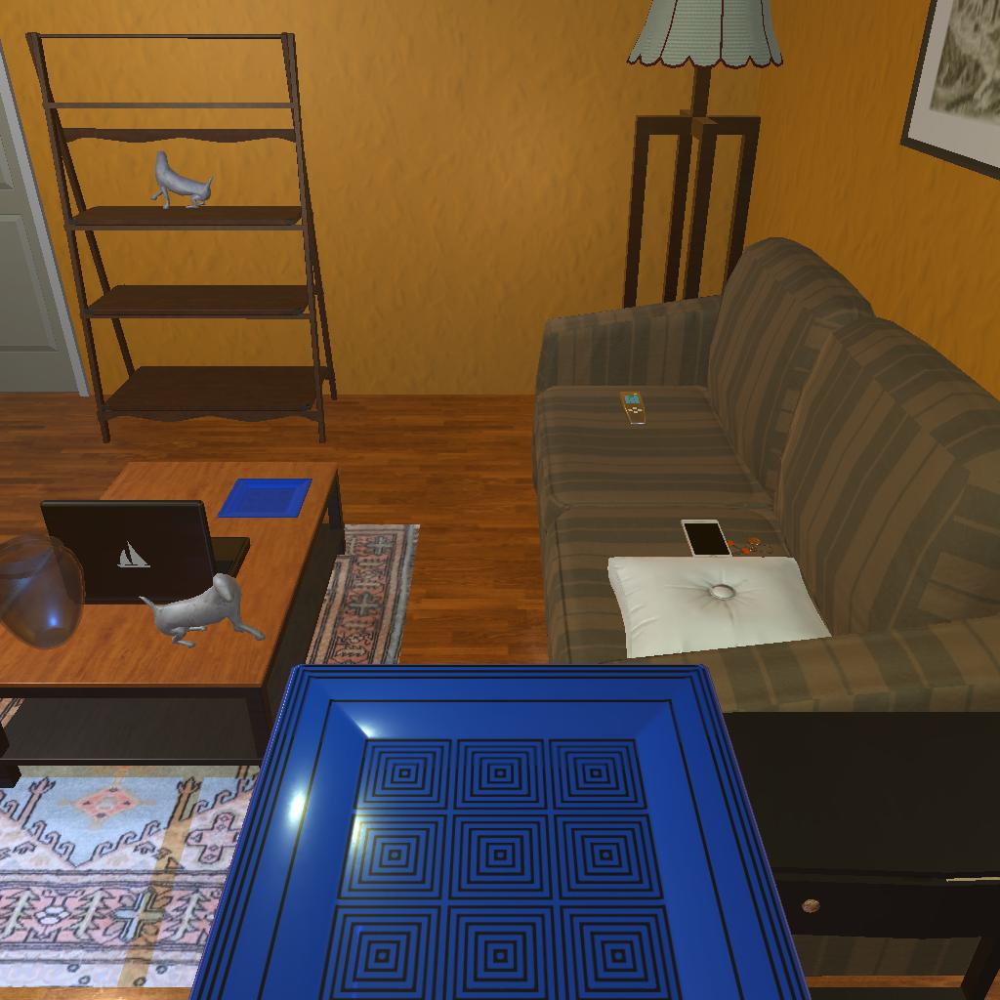

---------------------------------------------------------task: 3---------------------------------------------------------
--------------------------------------------------------------------------------------------------------------------------------------------------------------------
--------------------------------------------------------------------------------------------------------------------------------------------------------------------
Step:--------------------------------------------------------------------------16-------------------------------------------------------------------------------
----------------------------------------
VLM Prompt:
Image1:
Image2:
**Instruction**
1. Analyze the provided images to identify all visible household objects and compare the difference between images (e.h. whether the object is opened or not and taken on hand or not), focusing on those relevant to the task description "examine the plate with the floorlamp."
2. Use the analysis of images and the task hint "The agent must find an object of the desired type, locate and turn on a light source with the desired object in-hand." to answer the question: what is the most reasonable action in the choices for the task description "examine the plate with the floorlamp"?
3. Decide and write the answer using the template: The answer is: (i): , where i is the real number. If there is no desired object in images, search every place based on **Initial Observation** to find the object. And if no one is exactly correct, choose a similar answer.
**Initial Observation**
You are in the middle of a room. Looking quickly around you, you can see armchair (1), garbagecan (1), tvstand (1), shelf (1-5), sofa (1), coffeetable (1), sidetable (1-2), drawer (1)
**Answer Choices**
(1): go to armchair 1
(2): go to garbagecan 1
(3): go to tvstand 1
(4): go to shelf 1
(5): go to shelf 2
(6): go to sofa 1
(7): go to coffeetable 1
(8): go to sidetable 2
(9): go to drawer 1
(10): go to shelf 3
(11): go to shelf 4
(12): go to shelf 5
(13): put plate 2 in/on sidetable 1
(14): use floorlamp 1
(15): examine plate 2
(16): examine sidetable 1
**Answer**
Let's think step by step by following the instructions.
----------------------------------------
----------------------------------------
Original Response:
By analyzing the images, we can see various household objects such as a shelf with items on it, a sofa with a mobile phone and a book, a coffee table with a laptop, and a sidetable with a lamp. The task is to "examine the plate with the floorlamp," which implies that we need to find a plate and a floorlamp.
Looking at both images, there is no visible plate on any of the objects mentioned in the initial observation or answer choices. The floorlamp is also not visible in the images provided. Therefore, we need to search for these objects.
Based on the initial observation, we should look for the plate and the floorlamp at the locations mentioned. Since there is no "plate" or "floorlamp" in the answer choices, we need to find a similar action that could lead to locating these items. The most similar action would be to go to locations where such items might be found, such as a shelf or a sidetable which often have decorative items like plates and could possibly have a floorlamp near them.
The answer is: (4): go to shelf 1
----------------------------------------
----------------------------------------
>>> Refine Original VLM Response and Get Pure Action: go to shelf 1
----------------------------------------
-----------------------------------------------------------------
Running time: 10.085774421691895 seconds
Total Money: 1.0969900000000004
-----------------------------------------------------------------
-----------------------------------------------------------------
Text Observation:You arrive at loc 3. On the shelf 1, you see a television 1, a statue 3, and a creditcard 1.
-----------------------------------------------------------------
UNSUCCEED